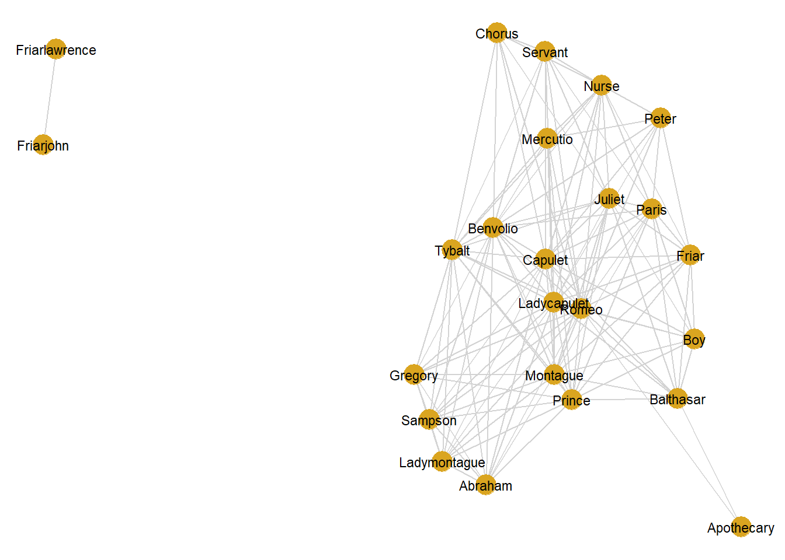
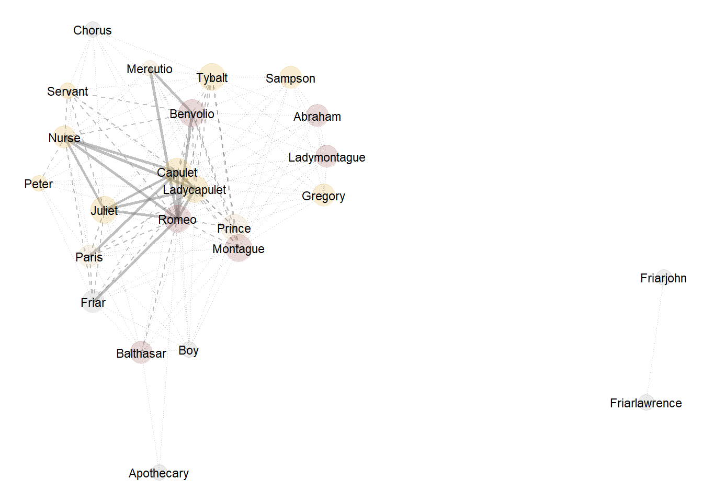
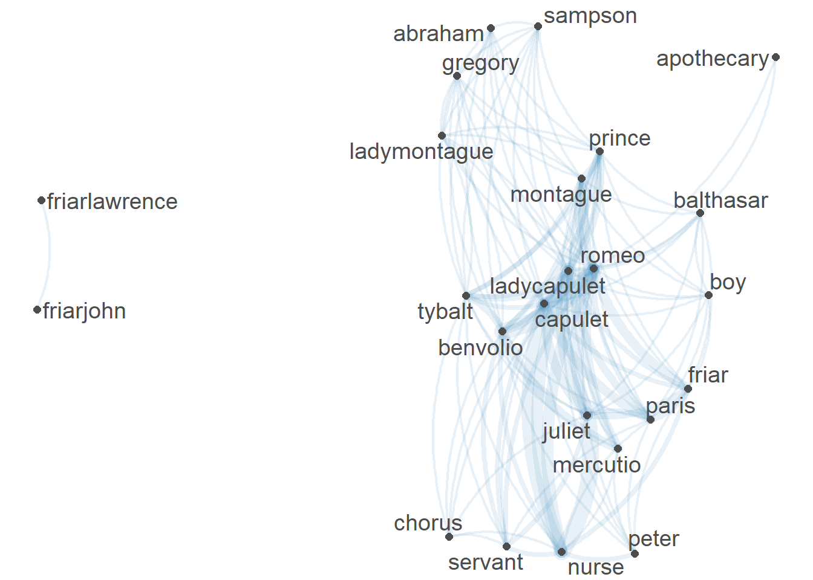
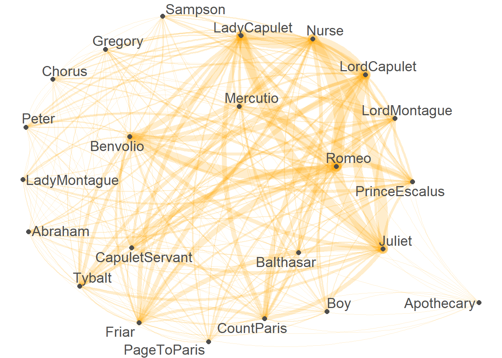
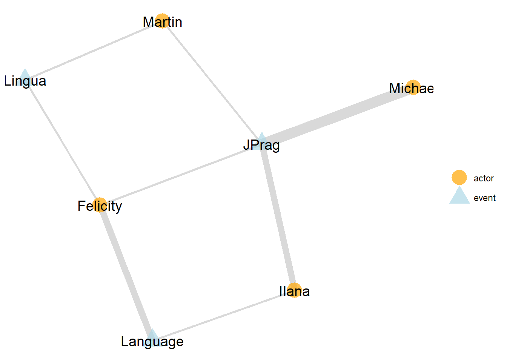

Network Analysis using R
Martin Schweinberger
2020-10-08

Introduction
This tutorial introduces network analysis using R. Network analysis is a method for visualization that can be used to represent various types of data. In addition to being a visualization technique, networks have certain statistical properties that can be compared which makes network analysis a very useful procedure. To this end, this tutorial shows how to create and modify network graphs. The entire R-markdown document for the sections below can be downloaded here.
How can you display the relationship between different elements, be they authors, characters, or words?
The most common way to visualize such relationships are networks. Networks, also called graphs, consist of nodes (typically represented as dots) and edges (typically represented as lines) and they can be directed or undirected networks.
In directed networks, the direction of edges is captured. For instance, the exports of countries. In such cases the lines are directed and typically have arrows to indicate direction. The thinkness of lines can also be ustilized to encode information such as frequency of contact.
Networks can have different layouts.
The centrality of networks is measured as
Node degree
Node closeness (the closer two nodes are, the closer connected ethy are)
Node betweeness
Edge betweenness
There are two ways to capture the basic structure of a network:
- Adjacency matrix (Matrix of 0s and 1s depending on whether the nodes are connected or not)
## A B C D E F G
## A 0 1 1 1 1 1 0
## B 1 0 0 0 0 0 0
## C 1 0 0 0 0 0 0
## D 1 0 0 0 0 0 0
## E 1 0 0 0 0 1 0
## F 1 0 0 0 1 0 1
## G 0 0 0 0 0 1 0- Edge list (Two column matrix to indicate which nodes are connected)
## V1 V2
## 1 A B
## 2 A C
## 3 A D
## 4 A E
## 5 A F
## 6 E F
## 7 F GThe example that we will be concerned with focuses on the first type of data as it is by far the most common way in which relationships are coded.To show how to create a network, we will have a look at the network that the characters in William Shakespeare’s Romeo and Juliet form.
Preparation and session set up
This tutorial is based on R. If you have not installed R or are new to it, you will find an introduction to and more information how to use R here. For this tutorials, we need to install certain packages from an R library so that the scripts shown below are executed without errors. Before turning to the code below, please install the packages by running the code below this paragraph. If you have already installed the packages mentioned below, then you can skip ahead ignore this section. To install the necessary packages, simply run the following code - it may take some time (between 1 and 5 minutes to install all of the libraries so you do not need to worry if it takes some time).
# clean current workspace
rm(list=ls(all=T))
# set options
options(stringsAsFactors = F) # no automatic data transformation
options("scipen" = 100, "digits" = 4) # supress math annotation
# install libraries
install.packages(c("GGally", "network", "sna", "ggplot2", "dplyr", "knitr",
"kableExtra", "gutenbergr", "stringr", "tm", "Matrix"))Once you have installed R, R-Studio, and have also initiated the session by executing the code shown above, you are good to go.
1 Creating a network of characters in Romeo and Juliet
In a first step, we load the necessary packages from the library.
# activate packages
lapply(c("GGally", "network", "ggplot2", "dplyr", "sna", "knitr", "kableExtra",
"gutenbergr", "stringr", "tm", "Matrix"),
library, character.only = TRUE)## [[1]]
## [1] "GGally" "ggplot2" "stats" "graphics" "grDevices" "utils"
## [7] "datasets" "methods" "base"
##
## [[2]]
## [1] "network" "GGally" "ggplot2" "stats" "graphics" "grDevices"
## [7] "utils" "datasets" "methods" "base"
##
## [[3]]
## [1] "network" "GGally" "ggplot2" "stats" "graphics" "grDevices"
## [7] "utils" "datasets" "methods" "base"
##
## [[4]]
## [1] "dplyr" "network" "GGally" "ggplot2" "stats" "graphics"
## [7] "grDevices" "utils" "datasets" "methods" "base"
##
## [[5]]
## [1] "sna" "statnet.common" "dplyr" "network"
## [5] "GGally" "ggplot2" "stats" "graphics"
## [9] "grDevices" "utils" "datasets" "methods"
## [13] "base"
##
## [[6]]
## [1] "knitr" "sna" "statnet.common" "dplyr"
## [5] "network" "GGally" "ggplot2" "stats"
## [9] "graphics" "grDevices" "utils" "datasets"
## [13] "methods" "base"
##
## [[7]]
## [1] "kableExtra" "knitr" "sna" "statnet.common"
## [5] "dplyr" "network" "GGally" "ggplot2"
## [9] "stats" "graphics" "grDevices" "utils"
## [13] "datasets" "methods" "base"
##
## [[8]]
## [1] "gutenbergr" "kableExtra" "knitr" "sna"
## [5] "statnet.common" "dplyr" "network" "GGally"
## [9] "ggplot2" "stats" "graphics" "grDevices"
## [13] "utils" "datasets" "methods" "base"
##
## [[9]]
## [1] "stringr" "gutenbergr" "kableExtra" "knitr"
## [5] "sna" "statnet.common" "dplyr" "network"
## [9] "GGally" "ggplot2" "stats" "graphics"
## [13] "grDevices" "utils" "datasets" "methods"
## [17] "base"
##
## [[10]]
## [1] "tm" "NLP" "stringr" "gutenbergr"
## [5] "kableExtra" "knitr" "sna" "statnet.common"
## [9] "dplyr" "network" "GGally" "ggplot2"
## [13] "stats" "graphics" "grDevices" "utils"
## [17] "datasets" "methods" "base"
##
## [[11]]
## [1] "Matrix" "tm" "NLP" "stringr"
## [5] "gutenbergr" "kableExtra" "knitr" "sna"
## [9] "statnet.common" "dplyr" "network" "GGally"
## [13] "ggplot2" "stats" "graphics" "grDevices"
## [17] "utils" "datasets" "methods" "base"The issue we want to investigate here relates to networks of personas in Shakespeare’s “Romeo and Juliet”.
# load data
romeo <- gutenberg_works(title == "Romeo and Juliet") %>%
gutenberg_download(meta_fields = "title")
# inspect data
romeo## # A tibble: 5,268 x 3
## gutenberg_id text title
## <int> <chr> <chr>
## 1 1513 "ROMEO AND JULIET" Romeo and Juliet
## 2 1513 "" Romeo and Juliet
## 3 1513 "by William Shakespeare" Romeo and Juliet
## 4 1513 "" Romeo and Juliet
## 5 1513 "" Romeo and Juliet
## 6 1513 "" Romeo and Juliet
## 7 1513 "" Romeo and Juliet
## 8 1513 "PERSONS REPRESENTED" Romeo and Juliet
## 9 1513 "" Romeo and Juliet
## 10 1513 "Escalus, Prince of Verona." Romeo and Juliet
## # ... with 5,258 more rowsNow that we have loaded the data, we need to split the data into scenes. Scenes during which personas leave or enter will have to be split too so that we arrive at a table that contains the personas that are present during a sub-scene.
# load split
romeoscenes <- romeo %>%
select(text) %>%
as.vector() %>%
str_replace_all(fixed("\""), "") %>%
str_replace_all(fixed("\n"), "") %>%
paste(collapse = " ") %>%
str_replace_all("(Scene )", "qwertz\\1") %>%
strsplit("qwertz") %>%
unlist()
# inspect data
str(romeoscenes[2])## chr "Scene I. A public place., , [Enter Sampson and Gregory armed with swords and bucklers.], , Sampson., Gregory, o"| __truncated__Now we extract the persons that are present in each scene.
# extract persons
romeopersonas <- romeoscenes %>%
str_match_all(" , [A-Z][a-z]{2,} {0,1}[A-Z]{0,1}[a-z]{0,}\\.")
# inspect data
str(romeopersonas[1:5])## List of 5
## $ : chr [1, 1] " , Chor."
## $ : chr [1:93, 1] " , Sampson." " , Gregory." " , Sampson." " , Gregory." ...
## $ : chr [1:29, 1] " , Capulet." " , Paris." " , Capulet." " , Paris." ...
## $ : chr [1:29, 1] " , Lady Capulet." " , Nurse." " , Juliet." " , Nurse." ...
## $ : chr [1:28, 1] " , Romeo." " , Benvolio." " , Romeo." " , Mercutio." ...We now clean and vectorize the data.
# extract personas per scene
personas <- sapply(romeopersonas, function(x){
x <- unlist(x)
x <- gsub(",", "", x)
x <- gsub("\\.", "", x)
x <- gsub(" ", "", x)
x <- unique(x)
x <- as.vector(x)
x <- paste(x, collapse = " ")
x <- gsub(" ActV", "", x)
x <- gsub(" Page", "", x)
})
# inspect data
personas## [1] "Chor"
## [2] "Sampson Gregory Abraham Benvolio Tybalt Capulet LadyCapulet Montague Prince LadyMontague Romeo"
## [3] "Capulet Paris Servant Benvolio Romeo"
## [4] "LadyCapulet Nurse Juliet Servant"
## [5] "Romeo Benvolio Mercutio"
## [6] "Capulet Romeo Servant Tybalt Juliet Nurse Benvolio Chorus"
## [7] "Romeo Benvolio Mercutio"
## [8] "Romeo Juliet Nurse"
## [9] "Friar Romeo"
## [10] "Mercutio Benvolio Romeo Nurse Peter"
## [11] "Juliet Nurse"
## [12] "Friar Romeo Juliet"
## [13] "Benvolio Mercutio Tybalt Romeo Prince LadyCapulet Montague"
## [14] "Juliet Nurse"
## [15] "Friar Romeo Nurse"
## [16] "Capulet Paris LadyCapulet"
## [17] "Juliet Romeo Nurse LadyCapulet Capulet"
## [18] "Friar Paris Juliet"
## [19] "Capulet Nurse Juliet LadyCapulet"
## [20] "Juliet LadyCapulet"
## [21] "LadyCapulet Nurse Capulet"
## [22] "Nurse LadyCapulet Capulet Friar Paris Peter"
## [23] "Romeo Balthasar Apothecary"
## [24] "FriarJohn FriarLawrence"
## [25] "Paris Romeo Balthasar Friar Juliet Prince Capulet LadyCapulet Montague Boy"We will delete the first element as it only contains the choir but none of the main personas.
# remove first elements
personas <- personas[2:length(personas)]
str(personas)## chr [1:24] "Sampson Gregory Abraham Benvolio Tybalt Capulet LadyCapulet Montague Prince LadyMontague Romeo" ...The vectors must now be transformed into a sparse matrix.
# create corpus
corpus <- Corpus(VectorSource(personas))
# create document term matrix
scenepersonas <- DocumentTermMatrix(corpus)
# convert dtm into sparse matrix
rnjdtm <- sparseMatrix(i = scenepersonas$i, j = scenepersonas$j,
x = scenepersonas$v,
dims = c(scenepersonas$nrow,
scenepersonas$ncol),
dimnames = dimnames(scenepersonas))
# calculate co-occurrence counts
coocurrence <- t(rnjdtm) %*% rnjdtm
# convert into matrix
romeom <- as.matrix(coocurrence)
romeo <- as.data.frame(romeom)
colnames(romeo) <- str_to_title(colnames(romeo))
rownames(romeo) <- str_to_title(rownames(romeo))
# inspect data
kable(romeo[1:5, 1:5], caption = "First 5 rows and columns of the romeo data") %>%
kable_styling(bootstrap_options = "striped", full_width = T, position = "left")| Abraham | Benvolio | Capulet | Gregory | Ladycapulet | |
|---|---|---|---|---|---|
| Abraham | 1 | 1 | 1 | 1 | 1 |
| Benvolio | 1 | 7 | 3 | 1 | 2 |
| Capulet | 1 | 3 | 9 | 1 | 7 |
| Gregory | 1 | 1 | 1 | 1 | 1 |
| Ladycapulet | 1 | 2 | 7 | 1 | 10 |
The data shows how often a character has appeared with each other character in the play - only Friar Lawrence and Friar John were excluded because they only appear in one scene where they talk to each other.
In a next step, we create a network object from the matrix. In addition, we define vertex names as these will be used as labels in the network plot.
net = network(romeo,
directed = FALSE,
ignore.eval = FALSE,
names.eval = "weights"
)
# vertex names
network.vertex.names(net) = rownames(romeo)
net## Network attributes:
## vertices = 24
## directed = FALSE
## hyper = FALSE
## loops = FALSE
## multiple = FALSE
## bipartite = FALSE
## total edges= 134
## missing edges= 0
## non-missing edges= 134
##
## Vertex attribute names:
## vertex.names
##
## Edge attribute names:
## weightsUnfortunately, network object are somewhat obscure in that they can not be displayed as simple data frames.
1.1 Creating basic networks
However, this does not matter at this point and we continue by visualizing the network in a simple network plot using the ggnet2 function.
ggnet2(net,
size = 6,
color = "goldenrod",
edge.size = .5,
edge.color = "lightgrey",
label = TRUE,
label.size = 3)
The basic network shown above only shows who has co-occurred with whom but it is not really informative. Therefore, we add information to the network object.
1.2 Modifying networks
To add information to a simple network graph, we create a new variable. This variable shows to which family each of the characters belong. To do this, we create a separate vector for each family which holds the characters that are members of this family. Then, we create a variable in the network object called “Family” which represents the family which the characters belong to.
# create vectors with names of characters
escalus <- c("Prince", "Paris", "Mercutio")
capulet <- c("Capulet", "Ladycapulet", "Juliet", "Tybalt", "Nurse",
"Peter", "Gregory", "Sampson", "Anthony", "Servant",
"Servant")
montague <- c("Montague", "Ladymontague", "Romeo", "Benvolio",
"Balthasar", "Abraham")
# add color by group
net %v% "Family" = ifelse(network.vertex.names(net) %in% capulet, "Capulet",
ifelse(network.vertex.names(net) %in% montague, "Montague",
ifelse(network.vertex.names(net) %in% escalus, "Escalus", "other")))We can now use the family variable to define a color so that each character can be associated with his or her family by coloring. In addition, we specify the edge attributes so that the thickness and the type of a line represent how often characters have co-occurred. Characters that co-occur frequently are connected by thick, straight, solid lines whereas characters that co-occurred together only infrequently are connected by thin, dotted lines.
# modify color
net %v% "color" = ifelse(net %v% "Family" == "Capulet", "goldenrod",
ifelse(net %v% "Family" == "Montague", "indianred4",
ifelse(net %v% "Family" == "Escalus", "burlywood", "gray60")))
# rescale edge size
set.edge.attribute(net, "weights", ifelse(net %e% "weights" <= 1, 0.25,
ifelse(net %e% "weights" <= 3, .5, 1)))
# define line type
set.edge.attribute(net, "lty", ifelse(net %e% "weights" == 0.25, 3,
ifelse(net %e% "weights" == .5, 2, 1)))We now visualize the network again but include information such as who belongs to which family (the translucent circles around the names) and how often they have co-occurred (thickness any type of the lines). We also specify alpha values which make lines and circles more or less translucent (the higher the value, the more translucent are the lines and circles).
ggnet2(net,
color = "color",
label = TRUE,
label.size = 3,
alpha = 0.2,
size = "degree",
size.cut = 3,
edge.size = "weights",
edge.lty = "lty",
edge.alpha = 0.5) +
guides(color = FALSE, size = FALSE)
We have now plotted the network of characters in Shakespeare’s Romeo and Juliet and we have added additional information to this plot. The characters are shown by name and the color behind their name informs us about which family they belong to (Capulet = golden, Montague = red, Escalus = burlywood, other = gray). The linetype and line thickness both provide information on how frequently characters interacted: slim dotted gray lines indicate that the characters only co-occurred once, dashed gray lines indicate that the characters co-occured up to three times and thick solid gray lines show that the characters co-occured more than 3 times together.
2 Creating networks with quanteda
The quanteda package contains many very useful functions for analyzing texts. Among these functions is the textplot_network function which provides a very handy way to display networks.
We could simply start with the romeo data that we have processed above. However, as the quanteda package offers useful text processing functions, we will start with the personas data set that we have created before so as to show how handy and easy to use the quanteda functions are. In a first step, we transform the text vectors of the persons data into a document-feature matrix using the dfm function.
library(quanteda)
romeo_dfm <- dfm(personas, remove_punct = TRUE)
head(romeo_dfm)## Document-feature matrix of: 6 documents, 24 features (76.4% sparse).
## features
## docs sampson gregory abraham benvolio tybalt capulet ladycapulet montague
## text1 1 1 1 1 1 1 1 1
## text2 0 0 0 1 0 1 0 0
## text3 0 0 0 0 0 0 1 0
## text4 0 0 0 1 0 0 0 0
## text5 0 0 0 1 1 1 0 0
## text6 0 0 0 1 0 0 0 0
## features
## docs prince ladymontague
## text1 1 1
## text2 0 0
## text3 0 0
## text4 0 0
## text5 0 0
## text6 0 0
## [ reached max_nfeat ... 14 more features ]We can then easily transform this document-feature matrix into a feature-co-occurrence matrix using the fcm function.
romeo_fcm <- fcm(romeo_dfm)
head(romeo_fcm)## Feature co-occurrence matrix of: 6 by 6 features.
## features
## features sampson gregory abraham benvolio tybalt capulet
## sampson 0 1 1 1 1 1
## gregory 0 0 1 1 1 1
## abraham 0 0 0 1 1 1
## benvolio 0 0 0 0 3 3
## tybalt 0 0 0 0 0 2
## capulet 0 0 0 0 0 0This feature-co-occurrence matrix can then serve as the input for the textplot_network function which already generates a nice network graph.
textplot_network(romeo_fcm, min_freq = 0.1, edge_alpha = 0.1, edge_size = 5)
The network graph can then be modified or customized easily by defining the arguments of the textplot_network fucntion. To see how and which aguments can be modified, you can use ?textplot_network.
textplot_network(romeo_fcm, min_freq = 2,
edge_alpha = 0.2,
edge_color = "orange",
edge_size = 5)
3 Creating two-layer networks
We will now create a different network - a network that links two types of entities, e.g. people to events or words to documents. In this example, we will link authors to journals. In contrast to the previous example, where we loaded already existing data, we create the data ourselves this time.
In a first step, we create a data frame representing three journals (JPrag, ELL, and WE) and four authors (MS, MH, NM, LM) who have have published in these journals.
# weighted adjacency matrix
authorjournal = data.frame(JPrag = c(1, 5, 1, 3),
Language = c(0, 0, 3, 1),
Lingua = c(1, 0, 1, 0),
row.names = c("Martin", "Michael", "Felicity", "Ilana"))
authorjournal## JPrag Language Lingua
## Martin 1 0 1
## Michael 5 0 0
## Felicity 1 3 1
## Ilana 3 1 0Next, we create a network out of the data frame.
# create network
ajn = network(authorjournal,
matrix.type = "bipartite",
ignore.eval = FALSE,
names.eval = "weights")Now that we have created a network object, we can visualize it. We will use colors and shapes to differentiate between authors and jorunals (or events).
# set colors for each mode
clrs = c("actor" = "orange", "event" = "lightblue")
ggnet2(ajn,
color = "mode",
shape = "mode",
size = 7,
alpha = 0.7,
palette = clrs,
label.size = 5,
label.color = "black",
label = TRUE,
edge.size = "weights",
edge.alpha = 0.3) +
theme(panel.background = element_rect(fill = "white"))## Warning: Duplicated override.aes is ignored.
The colors and shapes indicate the type of element: red circles indicate authors while blue triangles indicate journals. The thickness of the lines indicate that and how often an author has published in one of the journals. As such the lines indicate journal preference and can serve as a proxy for scientific field. In our example, Michael has very strong ties to JPrag while Felicity has stronger ties to Language. This could be interpreted to indicate that Michael is more interested in pragmatics while Felicity is more interested in General Linguistics. Ilana has ties to both JPrag and Language but the thickness of the lines suggest that she too is more interested in Pragmatocs while also dealing with General Linguistics.
Finally, you can inspect the data (which makes it easier to change, adapt, and modify) in the following way..
ggnet2(ajn,
color = "mode",
shape = "mode",
size = 5,
alpha = 0.7,
palette = clrs,
label.size = 3,
label.color = "white",
label = TRUE,
edge.size = "weights",
edge.alpha = 0.3)$data## label alpha color shape size x y
## 1 Martin 0.7 actor actor 5 0.8971063 0.72930938
## 2 Michael 0.7 actor actor 5 1.0000000 0.00000000
## 3 Felicity 0.7 actor actor 5 0.3199852 0.63701487
## 4 Ilana 0.7 actor actor 5 0.2937058 0.03071713
## 5 JPrag 0.7 event event 5 0.6689831 0.31115357
## 6 Language 0.7 event event 5 0.0000000 0.33207370
## 7 Lingua 0.7 event event 5 0.5774688 1.00000000We have reached the end of this tutorial and you now know how to create and modify networks in R and how you can highlight aspects of your data.
Citation & Session Info
Schweinberger, Martin. 2020. Network Analysis using R. Brisbane: The University of Queensland. url: https://slcladal.github.io/basicnetwork.html (Version 2020.09.29).
@manual{schweinberger2020net,
author = {Schweinberger, Martin},
title = {Network Analysis using R},
note = {https://slcladal.github.io/basicnetwork.html},
year = {2020},
organization = "The University of Queensland, Australia. School of Languages and Cultures},
address = {Brisbane},
edition = {2020/09/28}
}sessionInfo()## R version 4.0.2 (2020-06-22)
## Platform: x86_64-w64-mingw32/x64 (64-bit)
## Running under: Windows 10 x64 (build 19041)
##
## Matrix products: default
##
## locale:
## [1] LC_COLLATE=German_Germany.1252 LC_CTYPE=German_Germany.1252
## [3] LC_MONETARY=German_Germany.1252 LC_NUMERIC=C
## [5] LC_TIME=German_Germany.1252
##
## attached base packages:
## [1] stats graphics grDevices utils datasets methods base
##
## other attached packages:
## [1] quanteda_2.1.1 Matrix_1.2-18 tm_0.7-7
## [4] NLP_0.2-0 stringr_1.4.0 gutenbergr_0.2.0
## [7] kableExtra_1.2.1 knitr_1.30 sna_2.5
## [10] statnet.common_4.3.0 dplyr_1.0.2 network_1.16.0
## [13] GGally_2.0.0 ggplot2_3.3.2
##
## loaded via a namespace (and not attached):
## [1] ggrepel_0.8.2 Rcpp_1.0.5 lattice_0.20-41 assertthat_0.2.1
## [5] digest_0.6.25 utf8_1.1.4 slam_0.1-47 R6_2.4.1
## [9] plyr_1.8.6 evaluate_0.14 coda_0.19-3 httr_1.4.2
## [13] highr_0.8 pillar_1.4.6 rlang_0.4.7 lazyeval_0.2.2
## [17] curl_4.3 rstudioapi_0.11 data.table_1.13.0 rmarkdown_2.3
## [21] urltools_1.7.3 webshot_0.5.2 readr_1.3.1 triebeard_0.3.0
## [25] munsell_0.5.0 compiler_4.0.2 xfun_0.16 pkgconfig_2.0.3
## [29] htmltools_0.5.0 tidyselect_1.1.0 tibble_3.0.3 reshape_0.8.8
## [33] fansi_0.4.1 viridisLite_0.3.0 crayon_1.3.4 withr_2.3.0
## [37] grid_4.0.2 gtable_0.3.0 lifecycle_0.2.0 magrittr_1.5
## [41] scales_1.1.1 RcppParallel_5.0.2 cli_2.0.2 stringi_1.5.3
## [45] farver_2.0.3 fs_1.5.0 xml2_1.3.2 stopwords_2.0
## [49] ellipsis_0.3.1 generics_0.0.2 vctrs_0.3.4 fastmatch_1.1-0
## [53] RColorBrewer_1.1-2 tools_4.0.2 glue_1.4.2 purrr_0.3.4
## [57] hms_0.5.3 parallel_4.0.2 yaml_2.2.1 colorspace_1.4-1
## [61] rvest_0.3.6 usethis_1.6.3